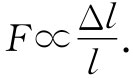
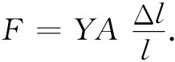
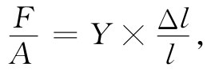
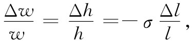

弹性学这一学科，是与使物体产生形变的力被撤去后即能恢复其大小和形状的那些物质行为打交道的。对于所有固态物体，我们在某种程度上都发现了这种弹性特征。要是我们有时间详尽地处理这一课题，则要观察下列许多事情：材料行为、弹性的一般规律、弹性的普遍理论、决定弹性的原子机制以及最后当力大至范性流动和破裂发生时的弹性定律限度。要详细地涉及全部这些课题，所花费时间可能比我们具有的更多，因而将不得不忽略某些东西。例如，我们将不讨论范性或弹性定律的限度（当过去谈论金属中的位错时，就曾稍微接触过这些课题）。并且，也将不能讨论弹性的内在机制——所以下述处理就将不会有如我们在以前各章中所试图达到的那种完整程度。我们的目的主要在于使你们熟悉怎样去处理诸如梁的弯曲那样的实际问题的某些方法。
当你挤压一块材料时，它将“屈服”——材料发生了形变。如果力足够小，则材料中各点的相对位移与力成正比——我们说这行为是弹性的 。下面将仅仅讨论弹性行为。首先，写出弹性的基本定律，然后，将其应用于若干不同情况。
假设取一根长度为l、宽度为w及高度为h的矩形杆，如图38-1所示。如果在其两端用力F来拉，此时其长度将伸长Δl。我们将假定在整个过程中这长度的改变是原来长度的一个微小分数。事实上，对于诸如木材和钢等材料，若长度改变超过其原长的百分之几，则该材料便将断裂。对于大多数材料，实验证明，在伸长足够小时，力与伸长成正比：
F∝Δl. （38.1）
这一关系就是大家熟悉的胡克定律 。
图38-1 一根杆在受均匀张力时发生的伸长
杆的伸长Δl也与其长度有关，我们可以通过下述论证来尽可能弄清楚这关系。若把全同的两块材料头对头地粘在一起，作用于每块上的力相同，且每块都将伸长Δl。这样，长为2l的一块的伸长即为截面与之相同但长度为l的另一块的伸长的两倍。为要得到一个更能表征该材料性质而包含较少特殊形状的数字，我们决定与伸长对原长的比率Δl/l打交道。这一比率与力成正比但与l无关：
 （38.2）
力F也将取决于该块材料的横截面积。假设将两块材料侧面与侧面相靠，那么，对于给定伸长Δl，我们作用于每块的力就应为F，亦即对这两块的组合作用了两倍的力。对于一给定的伸长量，力必定与该块材料的截面积A成正比。为获得一个比例系数与物体的线度无关的定律，我们把对于一矩形块的胡克定律写成下列形式：
 （38.3）
常数Y仅代表材料的特征性质，被称为杨氏模量 （你将经常见到杨氏模量被写成E，但我们已把E用作为电场、能量和电动势了，因而建议采用另一个字母）。
单位面积的力 称为应力 ，而单位长度的伸长——分数 伸长——则称为应变 。因此式（38.3）便可重新写成：
 （38.4）
应力=（杨氏模量）×（应变）.
胡克定律的另一个主要部分是：当你在一个方向上拉伸 一块材料时，它将在一垂直于伸长的方向上收缩 。宽度的收缩正比于原来宽度，也正比于Δl/l。这侧向收缩对于宽度和高度两方面都有相同比例，并经常被写成
 （38.5）
其中常数σ表示另一种称为泊松比 的材料性质。在符号上它总是正的，而且是一个小于1/2的数目（σ一般应取正值，那是“合理”的，但为什么一定 是这样，就不十分清楚）。
Y和σ这两常数就完全规定了一种均匀而各向同性 （即非晶体）材料的弹性。在结晶材料中，伸长和收缩在不同方向上可以不同，因而可以有许多弹性系数。我们将暂时把讨论局限于其性质可以由Y和σ加以描述的那些均匀而又各向同性的材料。和往常一样存在描述事物的不同方法——有些人喜欢用不同的常数来描述材料的弹性，但始终要用到两个，而且它们都可以与σ和Y联系起来。
我们所需要的最后一个普遍原理是叠加原理。由于式（38.4）和（38.5）两定律在力和位移方面都是线性的，所以叠加将有效。如果你有一组力并得到某个位移，然后你增加一组新的力并得到某个另外的位移，则合位移将是你从这两组力独立作用时所得到的两个位移之和。
现在，我们有了所有的普遍原理——叠加原理和方程式（38.4）与（38.5）——就有了全部弹性学。但这也好像是在说，一旦有了牛顿定律，就有了全部力学。或者，给出了麦克斯韦方程组，也就给出了全部电学。当然，有了这些原理你便可以得到许多东西，因为具备了你目前的数学本领你就能够走得很远。不过，我们还将演算几个特殊的应用问题。